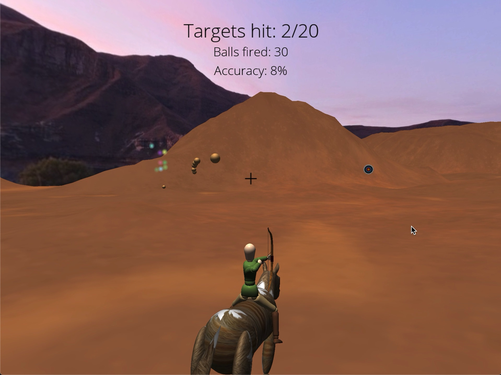
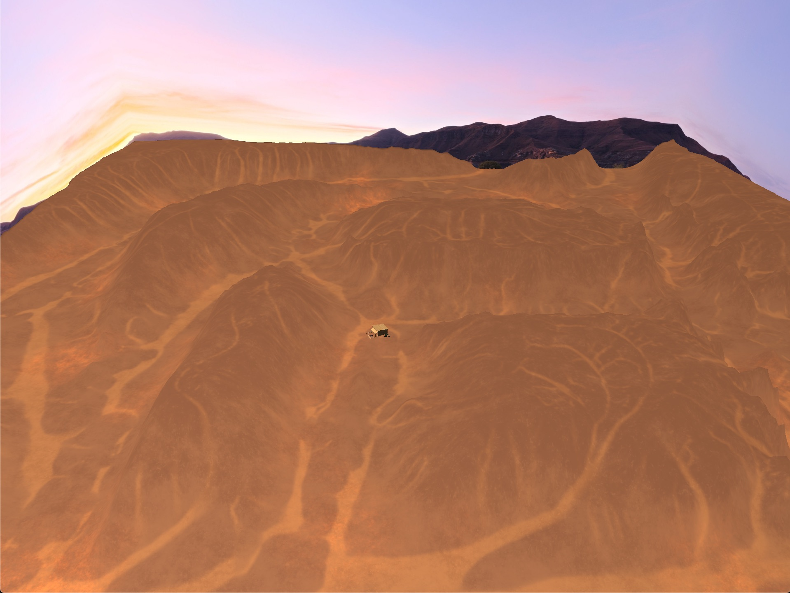

The horse and character are both hierarchically modeled. The horse is animated with keyframes, as well as with global translations and rotations for more natural up-down motion. The horse always stays at the height of the ground, faces the direction it's moving, and gallops smoothly by following a Bezier curve.
I implemented the arrows as balls, because arrows were difficult to visually track after being fired and creating an arrow trail was outside the scope of my project. The balls follow projectile motion after being fired and return to the player's quiver upon contact with either a target, the ground, or the skybox (out of bounds). The player can have at most 10 balls in the air at a time. For each additional ball launched, the first-launched ball in the air is reused and counts as a "missed" shot towards the player's accuracy.
There is collision detection between the balls and the targets, using sphere vs AABB (axis aligned bounding box) collision detection. Upon collision, the target explodes into a particle system and the ball returns to the player's quiver.
The game camera stays at a fixed radius around the horse with vertical constraints. It is controlled with pitch and yaw by the player's touchpad scroll. The center of the sphere is a point above the horse at all times.
Using the FreeType library, I implemented text rendering to display game instructions, stats and the final score. I also used a text-rendered plus sign for the crosshairs.
The entire terrain is generated from a DEM (digital elevation model), with an accompanying texture file. Although my DEM had a very high resolution of 4096x4096, I had trouble passing all these pixel values to the GPU in an array, so I instead used every 16th pixel, essentially converting my heightmap image to 256x256. Then for object placement on my terrain, I used barycentric coordinates to retrieve the terrain height anywhere in my world.
